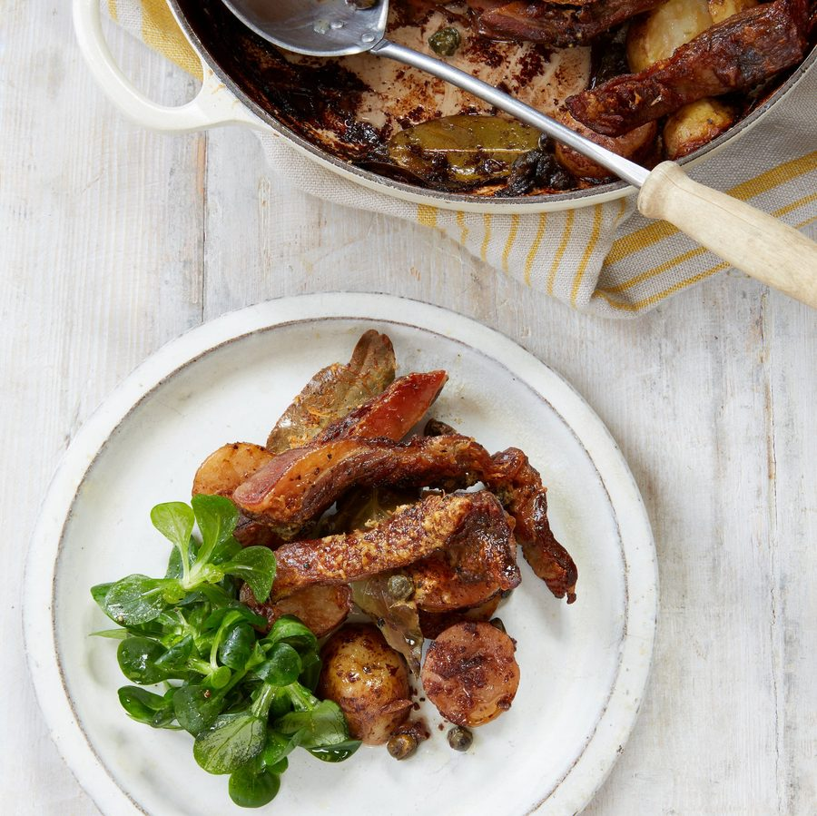

Lamb and pecorino

This dish of tender strips of lamb sitting on soft potatoes is as indulgent as it is straightforward. I made this for friends and had time for a stroll to the brewery for refreshments while the lamb looked after itself.
Heat the oven to 180C fan/gas mark 6.
Cut the lamb into strips about 3cm wide and season with salt. Slice the potatoes about 2cm thick.
Heat a wide ovenproof pan with a lid over a medium heat. Add a tablespoon of oil and some of the lamb, skin side down. Allow the lamb to colour and contract as the fat begins to render. Cook for 5 minutes, until golden, then turn them over and do the other side. Remove to a plate and repeat with the rest of the meat.
Pour off the fat and return the pan to a lower heat. Add the garlic and bay, fry for 3 minutes, then turn off the heat. Add the potatoes in one layer, the red wine and half of the cheese. Top with the lamb, a liberal grind of coarse black pepper, the red wine vinegar, the capers and the rest of the cheese. Cover, place in the oven and cook for 2 hours.
When cooked, remove the lamb from the top and spoon off some of the grease to reveal the red wine pecorino juice beneath.